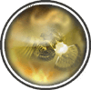

|

|
>> Содержание / Список кланов /
  RISE RISE
Все начиналось с маленькой деревушки, жители которой были довольно сильны духом и телом. Они жили дружно, старались всегда помогать не только друг другу, но и людям из соседних деревень. Постепенно деревушка разрослась и была готова предоставить кров и тарелку горячей похлебки каждому хорошему человеку. По истечении нескольких лет она превратилась в красивое и богатое королевство. Ее замки сияли золотом, жители были очень добры и приветливы.
Человек, которого люди когда-то избрали своим лидером, стал королем. Слава королевства разносилась за тысячи миль. Король чувствовал власть, богатство, боевую мощь. Он был ослеплен блеском своего королевства и не замечал ни людей находившихся рядом с ним, ни проблем, которые все чаще стали появляться на его земле. С каждым днем он хотел все больше денег. Он жертвовал жизнями народа ради своего благосостояния. Многие стали это замечать и выказывали недовольство. Наиболее сильные и приближенные решили пресечь это зло. Но король был настолько хитер, что снова обманом смог вернуть себе власть и доверие масс. Часть людей в те времена покинули родной дом не по своей воле. Королевство стало превращаться в цитадель лжи и коварства. Злой правитель взял все, что можно было взять, и покинул его, оставив жителей на произвол судьбы.
Все дороги к разрушающемуся поселению были забыты и потеряны. Воины, которые остались, боясь совсем утратить свой родной дом, уже не надеялись увидеть здесь новые лица и былую радость в глазах людей. В один очень серый и дождливый день часовой увидел вдалеке, что-то сияющее также как алмаз сияет на солнце. Он созвал всех на полуразрушенную башню. Люди, не зная чего ожидать, с растерянным взглядом всматривались в приближающийся лучик света. Вместе с ним приближалось голубое небо и белоснежные облака. Топот лошадей стал слышен все отчетливей. В скором времени они увидели небольшой отряд в доспехах, от которых так и лился свет. Люди не испугались ведь те, кто принес это яркое солнце и столь красивое небо не могут быть плохими людьми. Отряд остановился, статный человек спустился с коня и уверенным шагом направился к входу в селение. Подойдя, он громко постучал. Старые ворота со скрипом открылись. Один из жителей спросил: «Кто вы? И что вам нужно?». Человек произнес: «Мы наслышаны и о том, что некогда вы были очень сильны и богаты, и о том как с вами поступил ваш правитель». Кто-то дерзко выкрикнул: «И что с того?». Мужчина был очень сдержан и спокоен. Он продолжил: «Мы давно странствуем и помогли многим людям. Однажды на пути нам встретились ваши воины. Их доспехи были изношены, лица растеряны. Они обо всем нам рассказали. Обида за народ разрывала их сердца, им было некуда пойти. Братья решили взять их к себе». На мгновенье он остановился, перевел дыхание и снова заговорил: « Мы повидали множество земель, но, ни одна из них не смогла нас удержать. Как только мы услышали истории о вашем королевстве и его людях, в нас проснулось чувство, что оно может стать нашим домом. Если вы согласны, то мы готовы общими силами придать былую славу и блеск этой земле». Люди прониклись рассказом и приняли странников в свою семью. Народ селения был, как будто наделен новыми силами. Все начали трудиться на благо родного дома. Вновь понеслись вести во все концы света о новом Возрожденном королевстве. Правителем был избран тот самый вежливый статный мужчина. Глаза народа снова засияли счастьем. Здесь уже нет места лжи и жестокости.
И по сей день Возрожденное королевство растет и процветает.
Официальный сайт клана: http://riseklan.ru
|
 |
|